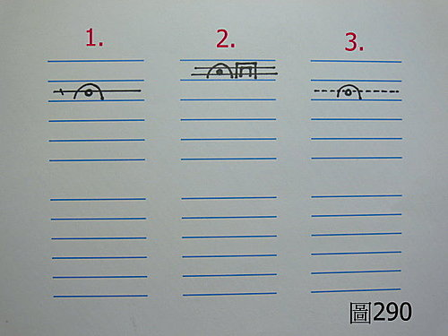

脈理醫理學 44：脈中脈
作者：陳建元
名詞解釋：
「脈中脈」是指在同一平面的脈位上，把到兩個脈的邊緣，如此的情況，叫做〝脈中脈〞。

譬如〈圖290〉中的1，這是在第2層脈中，把到一個滑脈，滑脈的邊緣或許不是很清晰，但卻是明顯的可以感覺到範圍界線的，但在同一平面上，又發現中央有一條細弦脈貫穿而過，像這樣型態的，叫做有〝脈中脈〞的情況，即一個脈中，還有另外一個脈的意思。〈圖290〉中的1，如果是在外感病中，一般是代表〝風寒開始入裡化熱〞的病理狀態。
譬如〈圖290〉中的2，這是在第1層脈中，把到一個滑脈、洪脈，而中央又有一個脈幅較寬的弦脈貫穿而過。如果是在外感病中，一般是代表〝風寒半轉風熱、風寒風熱並存的狀態〞。
譬如〈圖290〉中的3，這是在第2層脈中，把到一個滑脈，而中間又有一條較細弱的脈貫穿而過。如果是在外感病中，一般是代表〝風寒開始入裡化熱，但是風寒已經較輕微的病理狀態〞。
【引用請先來信告知徵求同意，若有涉及販售營利等商業行為，版權所有拷貝盜用必究。】
【藥王脈學講壇】http://blog.xuite.net/drjychen/twblog